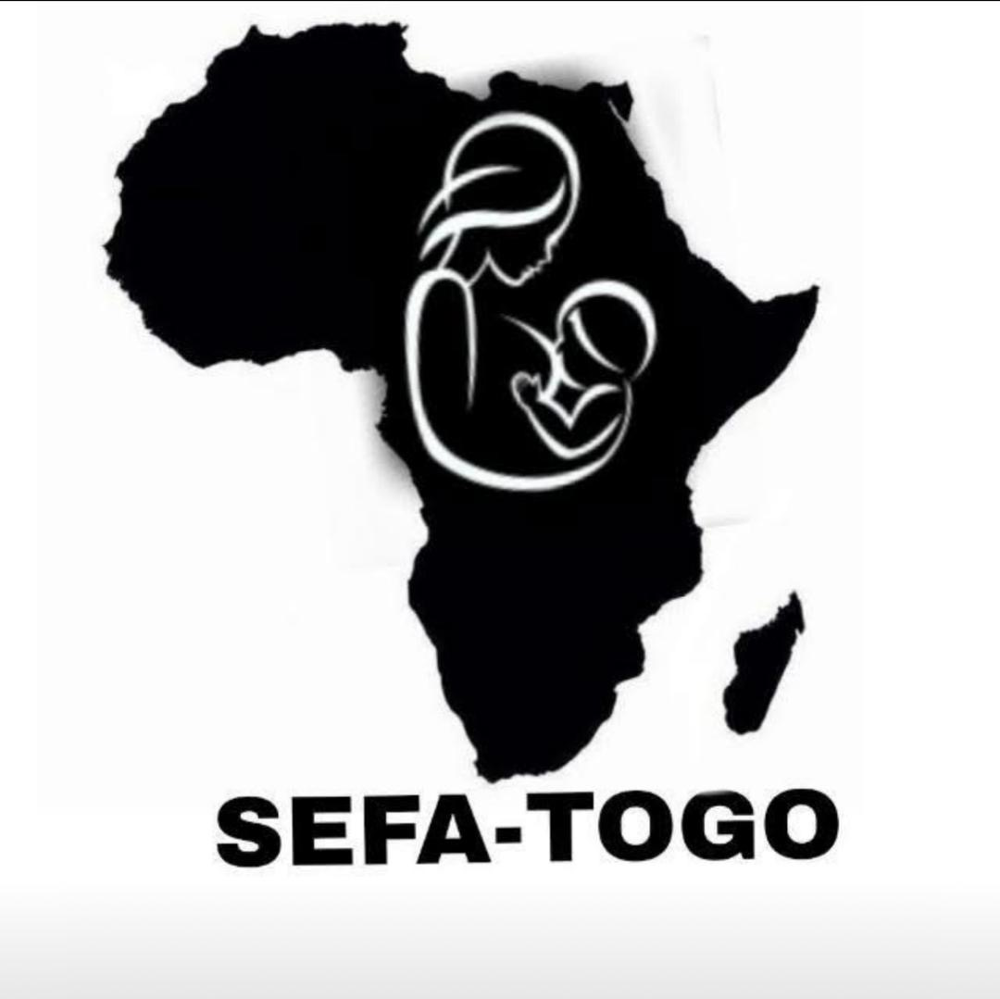
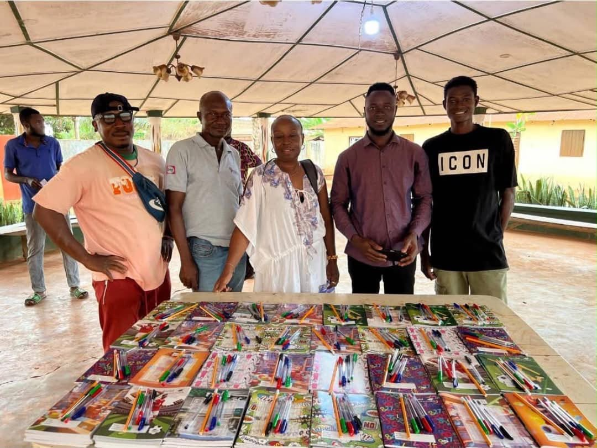
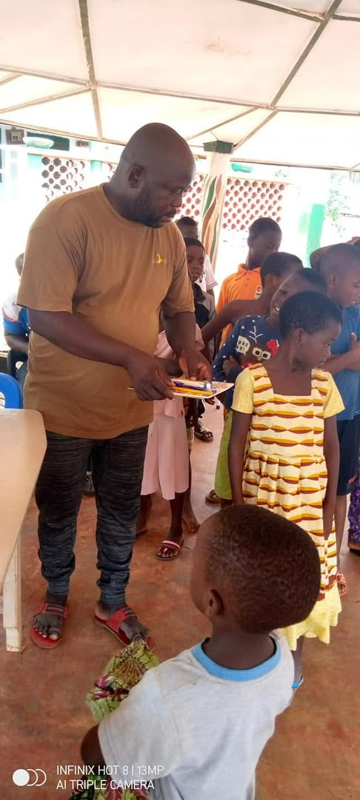
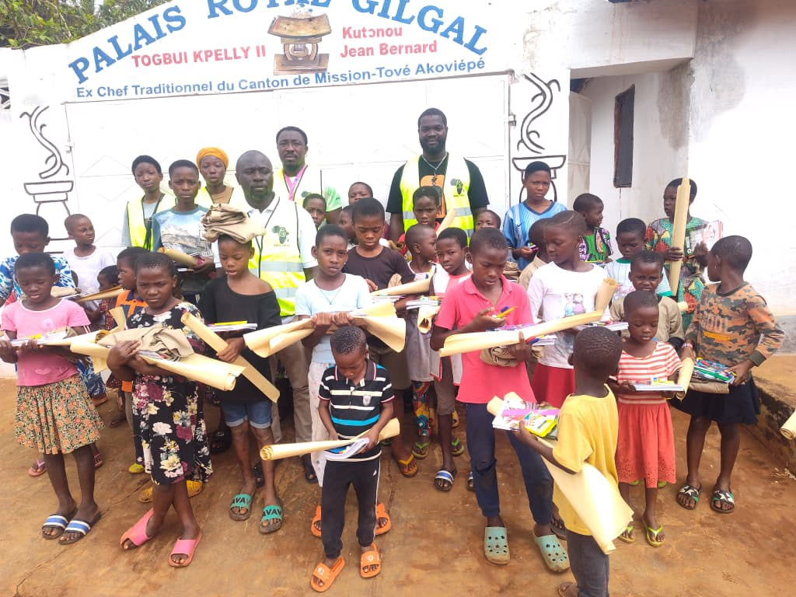
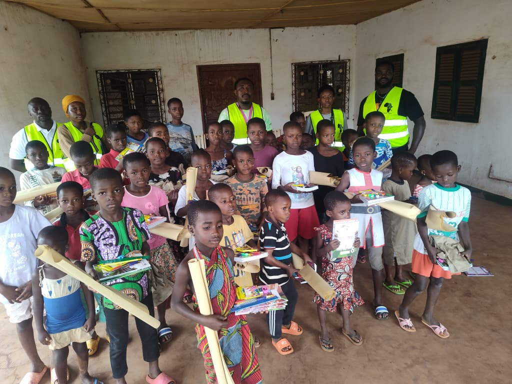
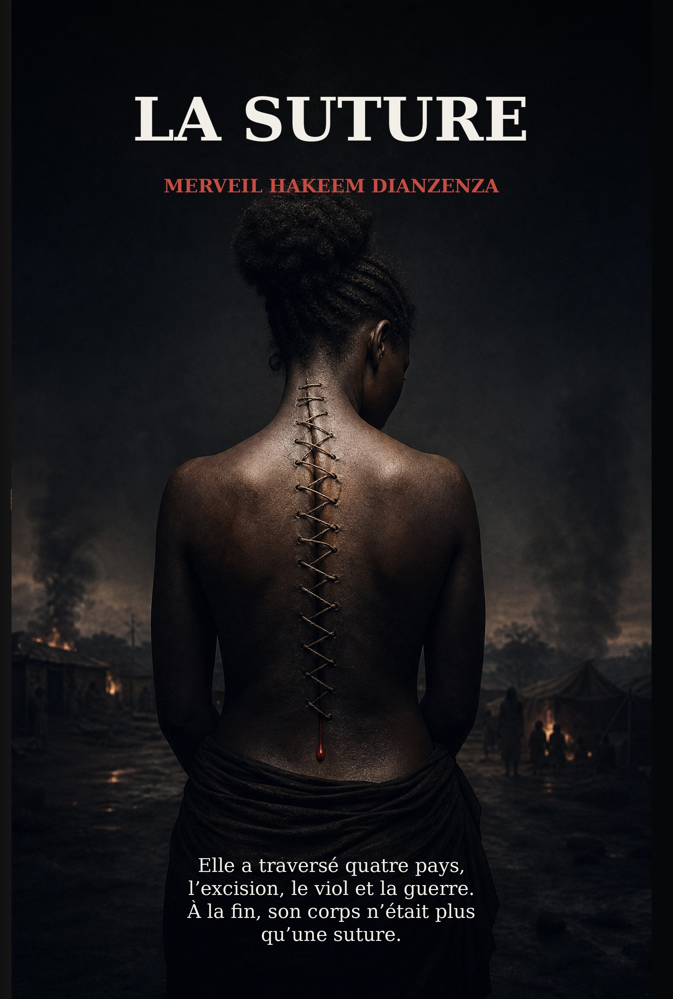

Merveil Hakeem Dianzenza
Né en dehors du pays, élevé en France. Licencié en Histoire de l'INALCO (option Swahili), ancien archiviste à l'Assemblée Nationale — écrivain, réalisateur et éditeur, surnommé « Le Roi de l'Afrofuturisme ».

Merveil Hakeem Dianzenza, écrivain afrofuturiste — Paris / Abidjan, 2025.
Fondateur & Directeur Éditorial
Né en dehors du pays, élevé en France, Merveil Hakeem Dianzenza a fondé Hakvision Éditions pour donner une tribune mondiale à la littérature africaine contemporaine. Son roman-fleuve KATIØPA — 634 pages d'afrofuturisme congolais — est aujourd'hui sa pièce maîtresse, présentée au Salon du Livre Africain en mars 2026 à Paris.
Licencié en Histoire de l'INALCO (option Swahili) et ancien archiviste à l'Assemblée Nationale, il nourrit son écriture d'une rigueur documentaire rare et d'un amour viscéral pour la transmission mémorielle.
Son roman DIAKU est préfacé par le Dr Denis Mukwege, Prix Nobel de la Paix 2018. KATIØPA a été finaliste du Prix Zamenga 2025.
Deux nations, un héritage
Né en dehors du pays, profondément attaché à la France qui lui a offert son éducation, il revendique son amour pour le Congo, terre de ses racines. Ces deux nations constituent les piliers de son identité et nourrissent une œuvre hybride.
Il collabore avec Utopia56 (maraudes, logistique humanitaire) et a mené en 2025 une mission humanitaire à Kinshasa et Matadi, où il a organisé des ateliers littéraires et culturels auprès des jeunes congolais.
Son engagement lui a valu d'être invité à l'Assemblée Nationale française pour un colloque sur la paix entre la RDC et le Rwanda, présidé par la députée Maud Petit.
« Nous ne sommes pas les descendants d'esclaves. Nous sommes les héritiers de royaumes oubliés. Et il est temps que le monde s'en souvienne. »
— Merveil Hakeem Dianzenza
Engagement humanitaire
SEFA Togo — Solidarité & Action
Association humanitaire engagée dans des actions de solidarité et de développement culturel en Afrique de l'Ouest.
Une action de terrain
SEFA Togo mène des actions concrètes de solidarité : distribution de fournitures scolaires, soutien aux enfants, mobilisation communautaire. Chaque intervention est un acte de foi en l'avenir du continent africain.
L'Afrique au cœur
Parallèlement à son travail d'écriture et d'édition, Merveil Hakeem Dianzenza supervise SEFA Togo, preuve que la littérature et l'humanitaire ne s'opposent pas — ils se complètent.
Ses missions de terrain au Togo, à Kinshasa et à Matadi témoignent d'un engagement profond : aller là où les mots ont besoin d'être soutenus par des actes. Il collabore également avec Utopia56 (maraudes et logistique humanitaire en France).




Bibliographie
Œuvres publiées

La Suture
Elle a traversé quatre pays, l'excision, le viol et la guerre. À la fin, son corps n'était plus qu'une suture. Un roman sans détour sur la violence faite aux femmes en temps de conflit, et sur ce qui, en elle, refuse de céder malgré tout.

KATIØPA — La Prophétie Noire
Le roman qui ressuscite l'âme africaine. Une insurrection mystique pour le réveil spirituel du continent. Présenté au Salon du Livre Africain, Paris, mars 2026. Familles royales, guerres spirituelles, Renaissance du continent.

DIAKU — L'Antidote Vivant
Dans un monde dévasté par le virus DIAKU, un orphelin congolais devient l'antidote vivant. Préfacé par le Dr Denis Mukwege, Prix Nobel de la Paix 2018 — un thriller géopolitique où l'Afrique et l'Asie s'unissent pour vaincre l'apocalypse.


Parcours en bref
Jalons d'un itinéraire
Parution du nouveau roman, disponible sur Amazon. Découvrir le livre →
Présentation officielle de KATIØPA, Un Écrivain à Kinshasa, Papa Masambukidi et L'Œil de Kulala Ntumba Pasco au Salon du Livre Africain de Paris (21 mars 2026).
Fondation du Prix Littéraire Dianzenza. Lauréat officiel : Jeancy Lembi pour le thème « Imaginer le futur du Congo ». Voir le verdict →
KATIØPA — La Prophétie Noire sélectionné et retenu parmi les finalistes du Prix Zamenga, prix dédié à la littérature africaine d'expression française.
Organisation d'ateliers littéraires et culturels auprès des jeunes congolais à Kinshasa et Matadi. Actions de solidarité et de transmission.
Invité à l'Assemblée Nationale française pour un colloque sur la paix entre la RDC et le Rwanda, présidé par la députée Maud Petit. Reconnaissance de son rôle d'intellectuel engagé.
Création de la maison d'édition afrofuturiste pour offrir une tribune mondiale à la littérature africaine contemporaine.
Parution du roman-fleuve afrofuturiste. Premier ouvrage majeur de Hakvision Éditions, disponible sur Payhip et Amazon.
Soutenir Hakvision Éditions
Votre soutien fait la différence
Votre soutien est essentiel pour permettre à Hakvision Éditions de continuer à publier des voix africaines, d'organiser des ateliers littéraires sur le terrain et de développer des projets culturels ambitieux. Chaque don, quel que soit son montant, contribue à bâtir une Afrique qui se raconte elle-même.
Merci de votre générosité et de votre confiance.
Horizon
Projets en cours
OkapiPlay
Plateforme de divertissement africain innovante. Interface cerveau-jeu conçue par Hakvision pour révolutionner le gaming panafricain.
En savoir plus →Série Animée KATIØPA
Adaptation audiovisuelle en développement. L'épopée afrofuturiste prend vie à l'écran dans une production panafricaine ambitieuse.
Prix Dianzenza 2027
Deuxième édition en préparation. Un prix littéraire pour célébrer l'excellence des écrivains afrodescendants et la relève africaine.
En savoir plus →Restez connecté
Rejoignez la révolution littéraire africaine
Suivez les actualités Hakvision, les lancements de livres et les événements culturels.